c2-s1 · حكايات الحارة · 4.9 ث دون تغيير
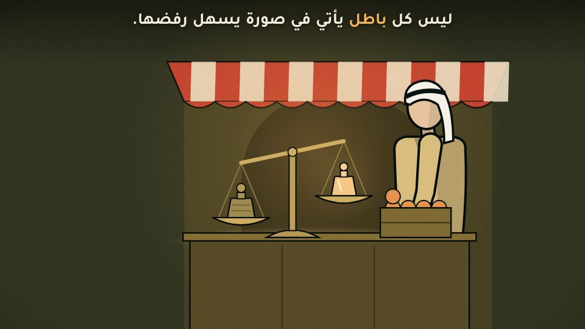

ليس كل باطل يأتي في صورة يسهل رفضها.
c2-s2 · حكايات الحارة · 7.2 ث معدّل
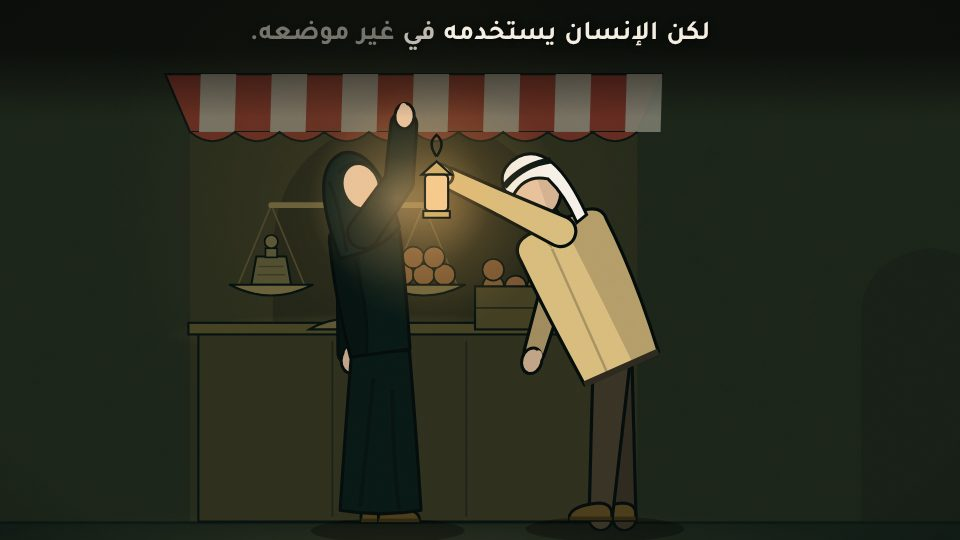

أحيانًا يكون وراء التصرف الخاطئ معنى صحيح، لكن الإنسان يستخدمه في غير موضعه.
c2-s3 · حكايات الحارة · 5.8 ث معدّل
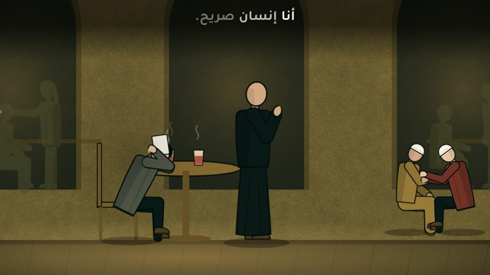

تأمل شخصًا يجرح الآخرين بكلماته، ثم يقول: أنا إنسان صريح.
c2-s4 · حكايات الحارة · 5.4 ث معدّل


الصراحة قيمة محمودة، لكنها لا تبرر القسوة وإهانة الناس.
c2-s5 · حكايات الحارة · 5.8 ث معدّل

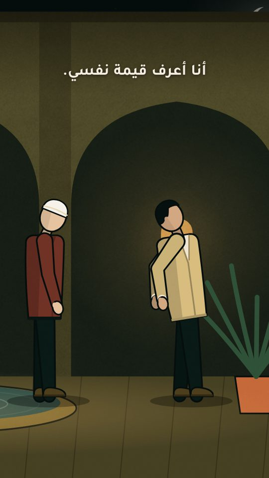
وشخصًا يتكبر على غيره، ثم يقول: أنا أعرف قيمة نفسي.
c2-s6 · حكايات الحارة · 4.9 ث معدّل

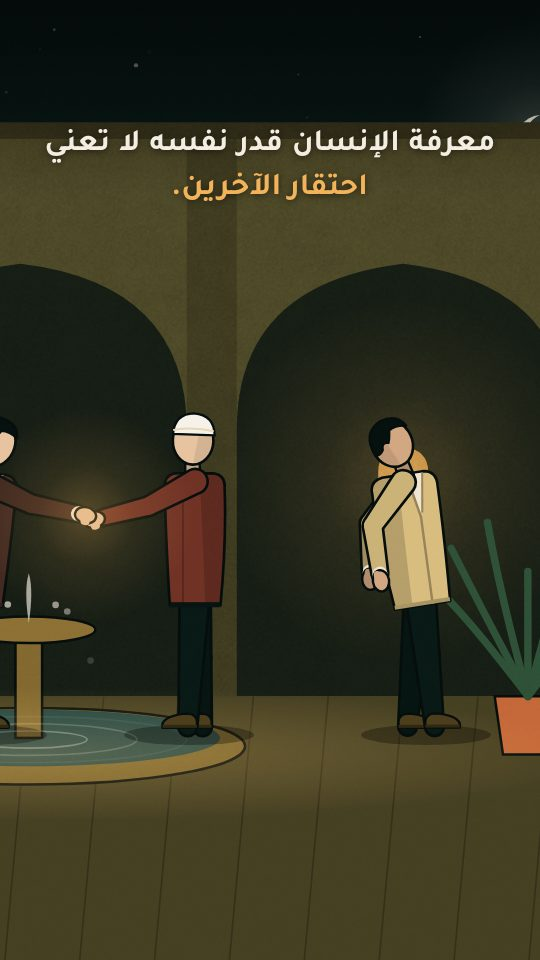
معرفة الإنسان قدر نفسه لا تعني احتقار الآخرين.
c2-s7 · حكايات الحارة · 7.2 ث معدّل
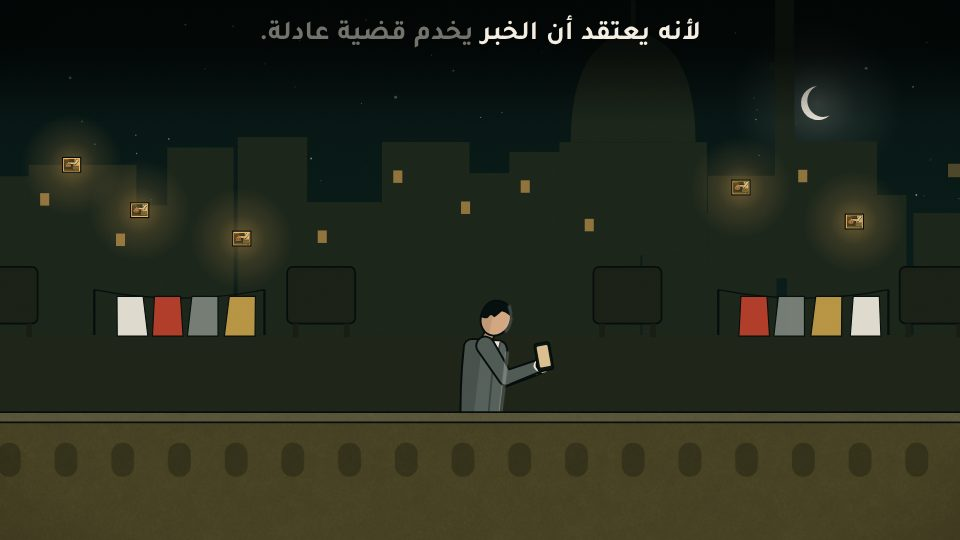

وشخصًا ينشر خبرًا لم يتحقق منه، لأنه يعتقد أن الخبر يخدم قضية عادلة.
c2-s8 · حكايات الحارة · 5.4 ث معدّل
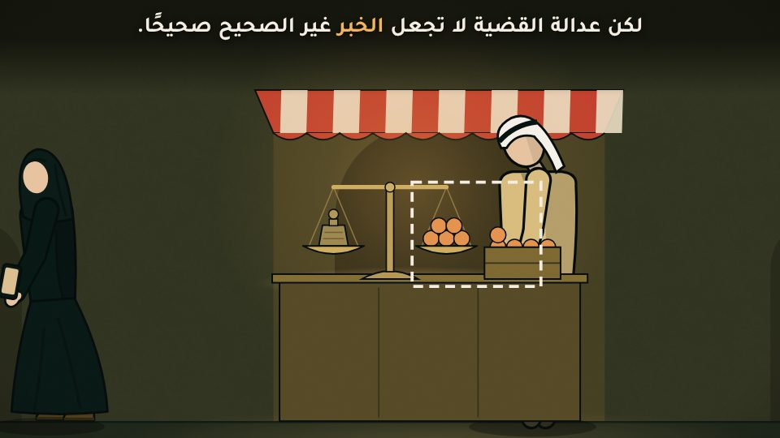

لكن عدالة القضية لا تجعل الخبر غير الصحيح صحيحًا.
c2-s9 · حكايات الحارة · 10.9 ث معدّل


في هذه المواقف، لا تكمن المشكلة بالضرورة في القيمة التي يتحدث عنها الإنسان، بل في الطريقة التي يستخدمها بها لتبرير فعله.
c2-s10 · حكايات الحارة · 5.8 ث دون تغيير
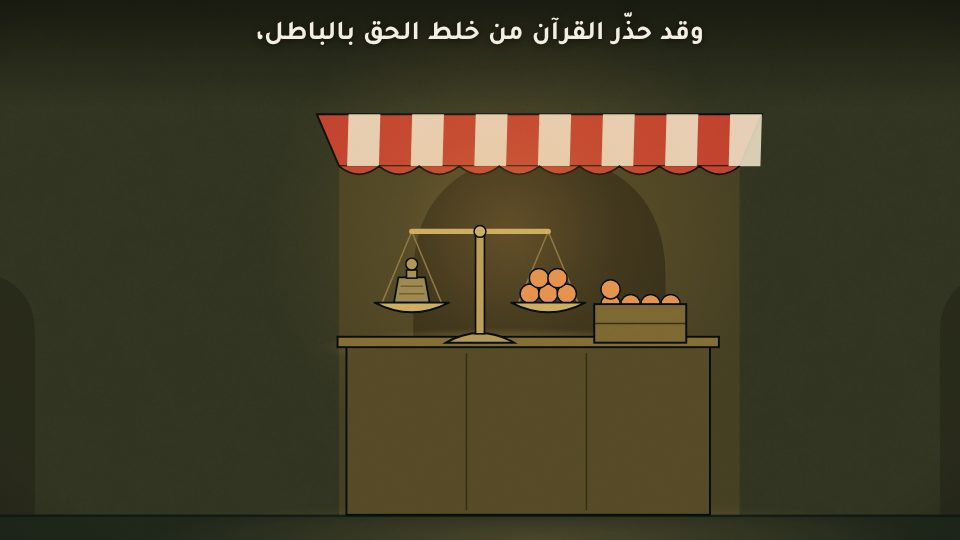
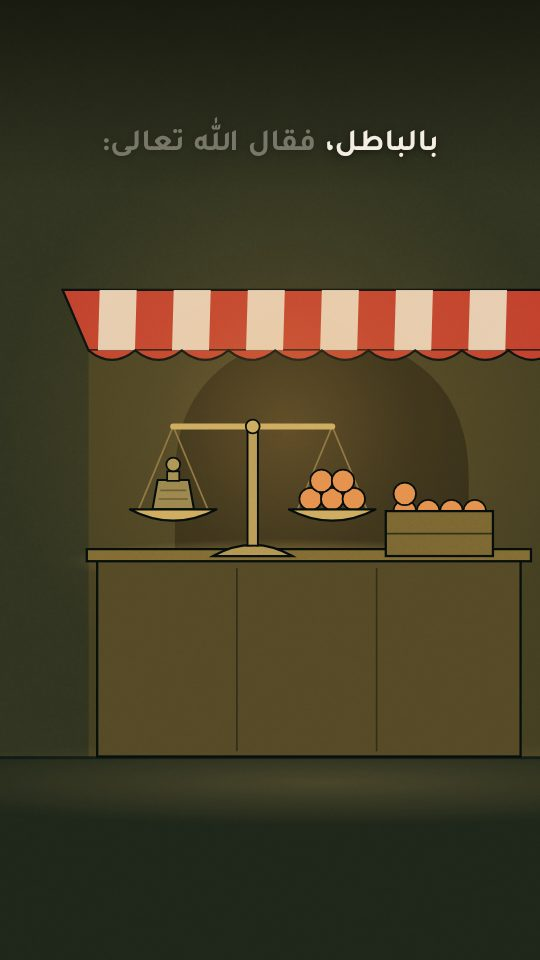
وقد حذّر القرآن من خلط الحق بالباطل، فقال الله تعالى:
c2-s11 · بطاقة الآية · 7 ث دون تغيير


—
c2-s12 · حكايات الحارة · 8.1 ث معدّل


فالحق لا يصبح باطلًا لأننا نكرهه، والباطل لا يصبح حقًّا لأننا نجد له تبريرًا مقنعًا.
c2-s13 · حكايات الحارة · 7.2 ث معدّل
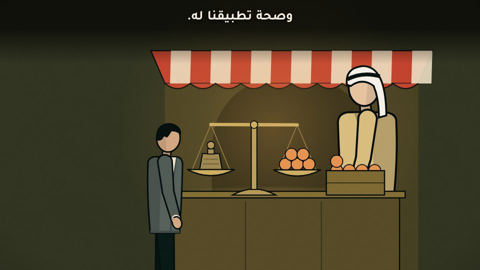

ومن صور الأمانة مع النفس أن نفرّق بين صحة المبدأ وصحة تطبيقنا له.
c2-s14 · حكايات الحارة · 6.3 ث معدّل


فقد تكون الصراحة حقًّا، لكن ما قلناه ليس من الصراحة المحمودة.
c2-s15 · حكايات الحارة · 6.3 ث معدّل


وقد تكون الثقة بالنفس أمرًا حسنًا، لكن ما فعلناه كان تكبرًا.
c2-s16 · حكايات الحارة · 12.7 ث دون تغيير
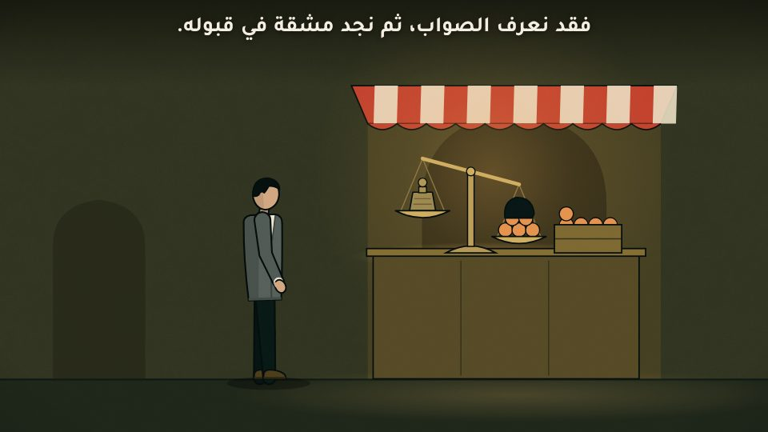
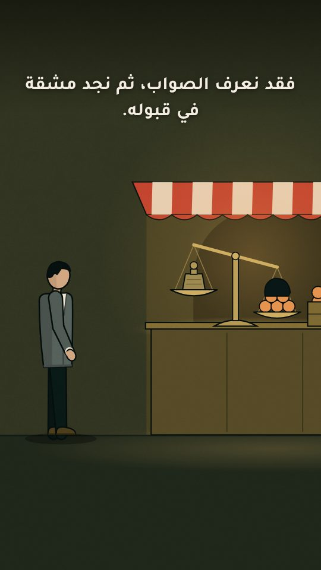
والميزان ليس الاسم الذي نعطيه لأفعالنا، بل حقيقتها. غير أن معرفة الحقيقة ليست دائمًا أصعب ما نواجهه؛ فقد نعرف الصواب، ثم نجد مشقة في قبوله.